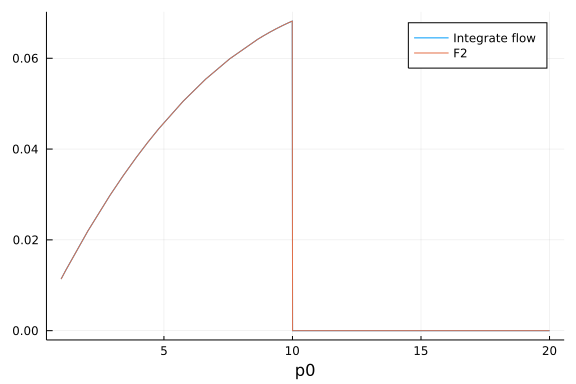
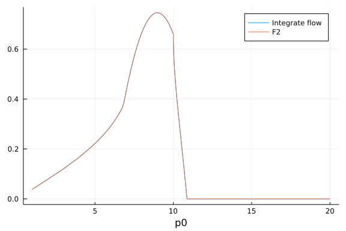
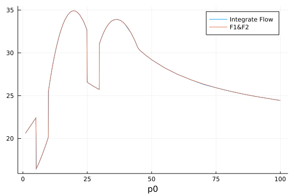
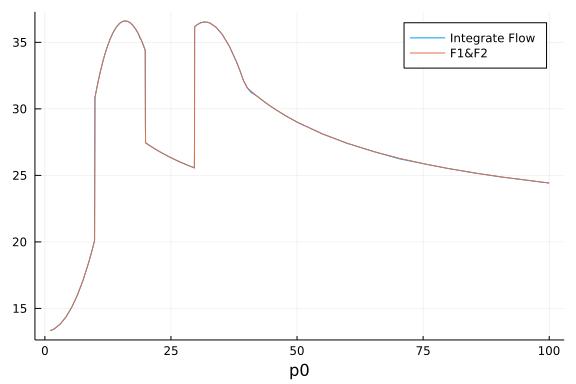

Check F1 & F2
load package
using FRGRealTime,Plots,HCubatureDefine integrate $\tilde{\partial_k}F1$ function:
testloopfunpp(p0,ps,k,m,T)=hquadrature(x->FRGRealTime.flowpp(p0,ps,x,m,T),0.0,k,initdiv=2000)[1]+FRGRealTime.loopfunpp(p0,ps,0.0,m,T)testloopfunpp (generic function with 1 method)Define integrate $\tilde{\partial_k}F2$ function:
testloopfunpm(p0,ps,k,m,T)=hquadrature(x->FRGRealTime.flowpm(p0,ps,x,m,T),0.0,k)[1]+FRGRealTime.loopfunpm(p0,ps,0.0,m,T)testloopfunpm (generic function with 1 method)Define integrate $\tilde{\partial_k}F1$ function for m<0:
testloopfunpp2(p0,ps,k,m,T)=-hquadrature(x->FRGRealTime.flowpp(p0,ps,x,m,T),k,400.0,rtol=1e-14,atol=1e-14,initdiv=10000)[1]+FRGRealTime.loopfunpp(p0,ps,400.0,m,T)testloopfunpp2 (generic function with 1 method)Define integrate $\tilde{\partial_k}F2$ function:
testloopfunpm2(p0,ps,k,m,T)=hquadrature(x->FRGRealTime.flowpm(p0,ps,x,m,T),2.0,k,initdiv=1000)[1]+FRGRealTime.loopfunpm(p0,ps,2.0,m,T)testloopfunpm2 (generic function with 1 method)F1 Checking Results
$k>ps,m>0,p_0\in (1.0,400.0)$
plot(p0->testloopfunpp(p0,10.0,20.0,1.0,145.0),1.0,400.0,label="Integrate flow",xaxis="p0")
plot!(p0->FRGRealTime.loopfunpp(p0,10.0,20.0,1.0,145.0),1.0,400.0,label="F1")
$k>ps,m>0,p_0\in (1.0,10.0)$
plot(p0->testloopfunpp(p0,10.0,20.0,1.0,145.0),1.0,20.0,label="Integrate flow",xaxis="p0")
plot!(p0->FRGRealTime.loopfunpp(p0,10.0,20.0,1.0,145.0),1.0,20.0,label="F1")$ps/2<k<ps,m>0$
plot(p0->testloopfunpp(p0,10.0,8.0,1.0,145.0),1.0,400.0,label="Integrate flow",xaxis="p0")
plot!(p0->FRGRealTime.loopfunpp(p0,10.0,8.0,1.0,145.0),1.0,400.0,label="F1")
$k<ps/2,m>0$
plot(p0->testloopfunpp(p0,10.0,2.0,1.0,145.0),1.0,400.0,label="Integrate flow",xaxis="p0")
plot!(p0->FRGRealTime.loopfunpp(p0,10.0,2.0,1.0,145.0),1.0,400.0,label="F1")
$k>ps,m<0,p_0\in (1.0,400.0)$
plot(p0->testloopfunpp2(p0,10.0,20.0,-3.0,145.0),1.0,400.0,label="Integrate flow",xaxis="p0")
plot!(p0->FRGRealTime.loopfunpp(p0,10.0,20.0,-3.0,145.0),1.0,400.0,label="F1")$ps/2<k<ps,m<0$
plot(p0->testloopfunpp2(p0,10.0,8.0,-3.0,145.0),1.0,400.0,label="Integrate flow",xaxis="p0")
plot!(p0->FRGRealTime.loopfunpp(p0,10.0,8.0,-3.0,145.0),1.0,400.0,label="F1")$k<ps/2,m>0$
plot(p0->testloopfunpp2(p0,10.0,2.0,-3.0,145.0),1.0,400.0,label="Integrate flow",xaxis="p0")
plot!(p0->FRGRealTime.loopfunpp(p0,10.0,2.0,-3.0,145.0),1.0,400.0,label="F1")$k<ps/2,m<0$
plot(p0->testloopfunpp2(p0,10.0,4.0,-3.0,145.0),9.25,9.5,label="Integrate flow",xaxis="p0")
plot!(p0->FRGRealTime.loopfunpp(p0,10.0,4.0,-3.0,145.0),9.25,9.5,label="F1")F2 Checking Results
$k>ps,m>0$
plot(p0->testloopfunpm(p0,10.0,20.0,1.0,145.0),1.0,20.0,label="Integrate flow",xaxis="p0")
plot!(p0->FRGRealTime.loopfunpm(p0,10.0,20.0,1.0,145.0),1.0,20.0,label="F2")
$ps/2<k<ps,m>0$
plot(p0->testloopfunpm(p0,10.0,8.0,1.0,145.0),1.0,20.0,label="Integrate flow",xaxis="p0")
plot!(p0->FRGRealTime.loopfunpm(p0,10.0,8.0,1.0,145.0),1.0,20.0,label="F2")
$k<ps/2,m>0$
plot(p0->testloopfunpm(p0,10.0,2.0,1.0,145.0),1.0,20.0,label="Integrate flow",xaxis="p0")
plot!(p0->FRGRealTime.loopfunpm(p0,10.0,2.0,1.0,145.0),1.0,20.0,label="F2")
$k>ps,m<0$
plot(p0->testloopfunpm2(p0,10.0,20.0,-3.0,145.0),1.0,20.0,label="Integrate flow",xaxis="p0")
plot!(p0->FRGRealTime.loopfunpm(p0,10.0,20.0,-3.0,145.0),1.0,20.0,label="F2")
$ps/2<k<ps,m<0$
plot(p0->testloopfunpm2(p0,10.0,8.0,-3.0,145.0),1.0,20.0,label="Integrate flow",xaxis="p0")
plot!(p0->FRGRealTime.loopfunpm(p0,10.0,8.0,-3.0,145.0),1.0,20.0,label="F2")
$k<ps/2,m<0$
plot(p0->testloopfunpm2(p0,10.0,2.0,-3.0,145.0),1.0,20.0,label="Integrate flow",xaxis="p0")
plot!(p0->FRGRealTime.loopfunpm(p0,10.0,2.0,-3.0,145.0),1.0,20.0,label="F2")
Check Vertex
The flow equation of vertex has the following form:
\[\begin{aligned} \partial_kV_k=&\lambda_{4\pi}(k)^2 \tilde{\partial_k}\Bigg\{3\pi\Bigg. (2 + N) \Big[\Big. F_1(p_0-q_0,|\mathbf{p}_s+\mathbf{q}_s|,k,m(k))+F_2(p_0-q_0,|\mathbf{p}_s+\mathbf{q}_s|,k,m(k))\\ &\Bigg.\Big.+F_1(p_0+q_0,|\mathbf{p}_s+\mathbf{q}_s|,k,m(k))+F_2(p_0+q_0,|\mathbf{p}_s+\mathbf{q}_s|,k,m(k))\Big]\Bigg\} \end{aligned}\]
Define Vertex testing function, we set $q_0=E_\pi(k,m)$:
testVIm(p0, ps, k, m, T, lam4pik)=-hquadrature(x->FRGRealTime.dkVIm(p0, ps, Epi(k,m), x, m, T, 4.0, lam4pik),k,400.0,atol=1e-6,rtol=1e-6,initdiv=1000)[1]testVIm (generic function with 1 method)Define a check plot function with p0 is x-axis:
function checkplotVIm(ps,qs,costh, k, m, T, lam4pik)
plot(p0->testVIm(p0, sqrt(ps^2+qs^2+2*ps*qs*costh), k, m, T, lam4pik),1.0,100.0,label="Integrate Flow",xaxis="p0")
plot!(p0->FRGRealTime.VImSimple(p0, sqrt(ps^2+qs^2+2*ps*qs*costh), Epi(k,m), k, m, T,4.0, lam4pik,400.0),1.0,100.0,label="F1&F2")
endcheckplotVIm (generic function with 1 method)\[m<0,k>ps/2,\cos\theta=1.0,ps=0.0\]
checkplotVIm(0.0,5.0,1.0,10.0,-2.0,145.0,1.0)\[m<0,k>ps/2,\cos\theta=1.0,ps=0.0,qs=8,k=10\]
checkplotVIm(0.0,8.0,1.0,10.0,-2.0,145.0,1.0)\[m<0,k>ps/2,\cos\theta=1.0,ps=0.0,qs=9,k=10\]
checkplotVIm(0.0,9.0,1.0,10.0,-2.0,145.0,1.0)
\[m<0,k>ps/2,\cos\theta=1.0,ps=0.0,qs=ps\]
checkplotVIm(0.0,10.0,1.0,10.0,-2.0,145.0,1.0)\[m<0,k>ps/2,\cos\theta=-1.0,ps=4.0,k=10.0\]
checkplotVIm(4.0,5.0,-1.0,10.0,-2.0,145.0,1.0)
\[m<0,k>ps/2,\cos\theta=0.0,ps=4.0,k=10.0\]
checkplotVIm(4.0,5.0,0.0,10.0,-2.0,145.0,1.0)
\[m<0,k>ps/2,\cos\theta=1.0,ps=4.0,k=10.0\]
checkplotVIm(4.0,5.0,1.0,10.0,-2.0,145.0,1.0)\[m<0,k>ps/2,\cos\theta=-1.0,ps=10.0,k=10.0\]
checkplotVIm(10.0,5.0,-1.0,10.0,-2.0,145.0,1.0)\[m<0,k>ps/2,\cos\theta=0.0,ps=10.0,k=10.0\]
checkplotVIm(10.0,5.0,-1.0,10.0,-2.0,145.0,1.0)
\[m<0,k>ps/2,\cos\theta=1.0,ps=10.0,k=10.0\]
checkplotVIm(10.0,5.0,1.0,10.0,-2.0,145.0,1.0)
\[m<0,k=ps/2,\cos\theta=-1.0\]
checkplotVIm(20.0,5.0,-1.0,10.0,-2.0,145.0,1.0)
\[m<0,k=ps/2,\cos\theta=0.0\]
checkplotVIm(20.0,5.0,0.0,10.0,-2.0,145.0,1.0)\[m<0,k=ps/2,\cos\theta=1.0\]
checkplotVIm(20.0,5.0,1.0,10.0,-2.0,145.0,1.0)\[m<0,k<ps/2,\cos\theta=-1.0\]
checkplotVIm(40.0,5.0,-1.0,10.0,-2.0,145.0,1.0)\[m<0,k<ps/2,\cos\theta=0.0\]
checkplotVIm(40.0,5.0,0.0,10.0,-2.0,145.0,1.0)\[m<0,k<ps/2,\cos\theta=1.0\]
checkplotVIm(40.0,5.0,1.0,10.0,-2.0,145.0,1.0)
\[m<0,k<ps/2,\cos\theta=-1.0,qs=k\]
checkplotVIm(40.0,10.0,-1.0,10.0,-2.0,145.0,1.0)\[m<0,k<ps/2,\cos\theta=0.0,qs=k\]
checkplotVIm(40.0,10.0,0.0,10.0,-2.0,145.0,1.0)
\[m<0,k<ps/2,\cos\theta=1.0,qs=k\]
checkplotVIm(40.0,10.0,1.0,10.0,-2.0,145.0,1.0)\[m<0,k=ps/2,\cos\theta=-1.0,qs=k\]
checkplotVIm(20.0,10.0,-1.0,10.0,-2.0,145.0,1.0)
\[m<0,k=ps/2,\cos\theta=0.0,qs=k\]
checkplotVIm(20.0,10.0,0.0,10.0,-2.0,145.0,1.0)Check Two Point function
Define mass function and $\lambda_4\pi$ function:
using Dierckx
testmfun(x)=-2.0
testlamfun(x)=1.0
testmfun2=Spline1D(collect(0.1:0.5:800.0),fill(-2.0,length(collect(0.1:0.5:800.0))))
testlamfun2=Spline1D(collect(0.1:0.5:800.0),fill(1.0,length(collect(0.1:0.5:800.0))))Spline1D(knots=[0.1,1.1 … 798.6,799.6] (1598 elements), k=3, extrapolation=
"nearest", residual=0.0)\[p_s=0.5, m=-2,T=145,p_0\in (1,100)\]
v1=collect(1.0:2.0:100.0)
propout1=(p0->FRGRealTime.propImintqs(p0, 0.5, 145.0,5.0,400.0, 4.0, testmfun2, testlamfun2)).(v1)
propdeltaout1=-(p0->FRGRealTime.propImintqs_delta1(p0, 0.5, 145.0,5.0,400.0, 4.0, testmfun2, testlamfun2)).(v1)
propsimpleout1=FRGRealTime.propImSimple.(v1, 0.5, 145.0, 5.0,400.0, 4.0, -2.0, 1.0)
plot(v1,propout1+propdeltaout1,lable="Integrate Flow",xaxis="p0")
plot!(v1,propsimpleout1,lable="F1 & F2")\[p_s=0.5, m=-2,T=145,p_0\in (1,400)\]
v1=collect(1.0:5.0:400.0)
propout1=(p0->FRGRealTime.propImintqs(p0, 0.5, 145.0,5.0,400.0, 4.0, testmfun2, testlamfun2)).(v1)
propdeltaout1=-(p0->FRGRealTime.propImintqs_delta1(p0, 0.5, 145.0,5.0,400.0, 4.0, testmfun2, testlamfun2)).(v1)
propsimpleout1=FRGRealTime.propImSimple.(v1, 0.5, 145.0, 5.0,400.0, 4.0, -2.0, 1.0)
plot(v1,propout1+propdeltaout1,lable="Integrate Flow",xaxis="p0")
plot!(v1,propsimpleout1,lable="F1 & F2")\[p_s=100.0, m=-2,T=145,p_0\in (1,100)\]
v1=collect(1.0:2.0:100.0)
propout1=(p0->FRGRealTime.propImintqs(p0, 100.0, 145.0,5.0,400.0, 4.0, testmfun2, testlamfun2)).(v1)
propdeltaout1=-(p0->FRGRealTime.propImintqs_delta1(p0, 100.0, 145.0,5.0,400.0, 4.0, testmfun2, testlamfun2)).(v1)
propsimpleout1=FRGRealTime.propImSimple.(v1, 100.0, 145.0, 5.0,400.0, 4.0, -2.0, 1.0)
plot(v1,propout1+propdeltaout1,lable="Integrate Flow",xaxis="p0")
plot!(v1,propsimpleout1,lable="F1 & F2")